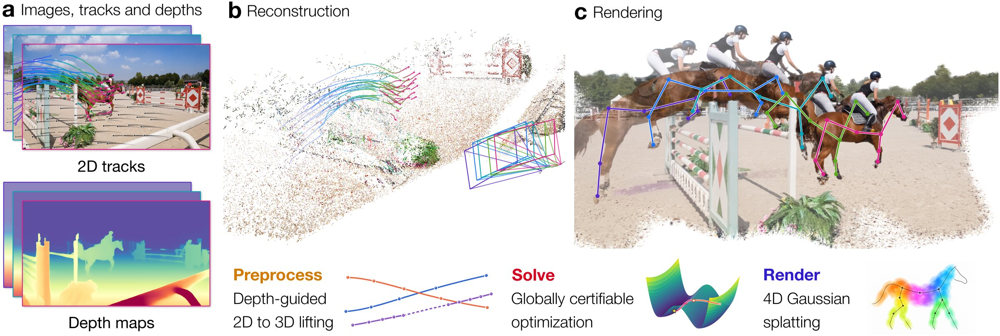

Lift tracks with predicted depth
Point trackers and a monocular depth model give 2D tracks and per-frame depth. Every tracked point is lifted to 3D, and the tracks are split into static and dynamic ones.
Overview · drag the slider or let it play
From (a) 2D tracks and monocular depth, a solver with certified global optimality recovers (b) the cameras, static geometry, and dynamic motion, which initialize (c) 4D Gaussian splatting for rendering.
Step 1 of 4 · Input
An off-the-shelf point tracker gives 2D tracks, and a monocular depth model gives per-frame depth. Masks split the tracks into static and dynamic ones.
Step 2 of 4 · Preprocess
Each 2D observation is lifted to a 3D point with its predicted depth. The depth of each frame is only known up to scale, so the solver also estimates one scale per frame. The clip lifts one frame this way: every pixel slides along its camera ray to its depth.
Step 3 of 4 · Solve
Static tracks give a scaled bundle adjustment whose SDP relaxation our GPU solver solves with a certificate of global optimality; the deformation graph's motion is then certified the same way. The clip replays the solver: cameras and landmarks settle in eight iterations, then the dynamic tracks play.
Step 4 of 4 · Render
The certified cameras and graph motion initialize dynamic Gaussian splatting, which refines appearance and geometry for novel-view rendering. The clip is that model rendered from the panel's viewpoint, with the same tracked points.
XM4D splits 4D reconstruction into a static and a dynamic stage, and solves each one with a certifiably globally optimal GPU solver before any photometric training.
Each run is seen from one of its input cameras, held fixed while time plays: the trained 4D Gaussians rendered from it, the 3D tracks, and the embedded deformation graph that moves the dynamic points.
Point trackers and a monocular depth model give 2D tracks and per-frame depth. Every tracked point is lifted to 3D, and the tracks are split into static and dynamic ones.
A scaled bundle adjustment over camera poses, per-frame depth scales, and static landmarks reduces to a QCQP over scaled rotations. Its SDP relaxation is solved by a GPU Riemannian staircase that returns a certificate of global optimality.
Dynamic motion is an embedded deformation graph whose node transformations are expressed relative to one rest frame. Tracking, rigidity, and smoothness then reduce to a rotation-only QCQP that the same certified solver handles.
The certified cameras and graph motion initialize dynamic Gaussian splatting, which refines appearance and geometry for novel-view rendering.

XM4D is the journal extension of XM, our RSS 2025 solver for static structure from motion. It keeps XM's certifiable optimization and carries it over to dynamic scenes.
RSS 2025 Best Systems Paper Award
This work · journal extension
Accurate 4D reconstruction remains challenging: jointly estimating camera motion, scene geometry, and non-rigid deformation entails highly nonconvex optimization, making global optimality difficult to guarantee. We present XM4D, a framework for accurate and efficient 4D reconstruction built upon certifiably globally optimal geometric optimization. By separating camera motion estimation from non-rigid deformation, we formulate both stages as structured quadratically constrained quadratic programs (QCQP) that admit semidefinite programming (SDP) relaxations and verifiable global optimality certificates of the resulting SDPs. For camera motion estimation, we lift static point tracks into 3D using foundational depth prediction models and formulate a scaled bundle adjustment problem that jointly estimates camera poses, depth scales, and static landmarks. By analytically eliminating translations and landmarks, we reduce the problem to a QCQP over scaled rotations. For non-rigid reconstruction, we represent dynamic motion using an embedded deformation graph (EDG) and show that its tracking, rigidity, and temporal regularization objectives similarly reduce to a rotation-only QCQP. Both problems admit SDP relaxations that we solve efficiently with a GPU-accelerated Burer–Monteiro solver based on Riemannian optimization. The recovered geometry further initializes dynamic Gaussian splatting for photometric refinement. Extensive experiments across seven benchmarks demonstrate accurate camera motion estimation on both static and dynamic scenes, efficient optimization that scales to thousands of frames, and state-of-the-art novel-view rendering quality.
Novel views rendered from cameras and motion that XM4D estimates itself, on DyCheck, NVIDIA, and Syn4D, and reconstructions of casual videos beyond the benchmarks.
Casual videos of animals, people, hands, a robot, and articulated objects.
@article{han2026xm4d,
title = {{XM4D}: Non-Rigid Convex Structure from Motion with Embedded
Deformation Graphs for {4D} Reconstruction},
author = {Han, Haoyu and Lei, Jiahui and Benarroch Jedlicki, Jack and Yang, Heng},
year = {2026}
}If you use the static solver, please also cite XM:
@inproceedings{han2025xm,
title = {Building Rome with Convex Optimization},
author = {Han, Haoyu and Yang, Heng},
booktitle = {Robotics: Science and Systems (RSS)},
year = {2025}
}